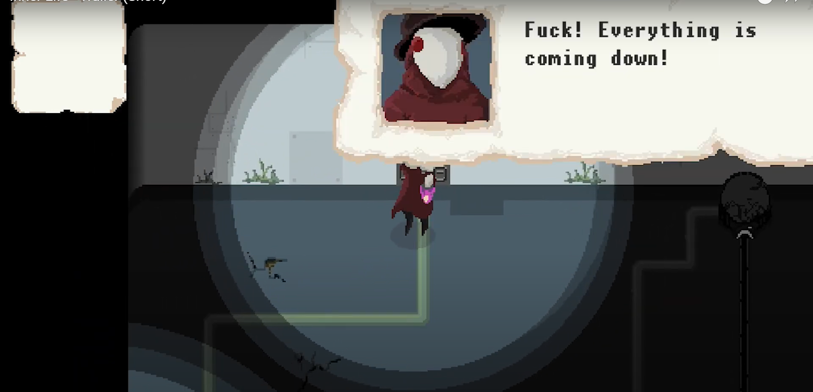

The world has changed. Human beings are forced to live inside mechanical titans
in symbiosis to survive. But their balance is still disturbed. The healer has to
venture out, find the titans who suffer from humanity and heal them. "Inner
Life" is a puzzle adventure game with alot of dialogue, taking place in a
dystopian setting. There are many different characters and you will have to
understand their stories and the healers story in order to aid the titan they
are living in.
Analysis
Look and listen in the game: What features (or assets) are
helping to create an illusion of exploring a world? How simple or complex
are the graphics and media?
The world is brought to life by the use of sound design and lighting.
The initial level immerses the player by throwing them into a stressful
and dark environment with flashing red lights and blaring alarms. The
player character holds onto a lantern that illuminates their immediate
radius, leaving the surrounding map dim and obscured. The limitation of
visibility prompts the player to explore their surroundings
thoroughly.
The graphics are in a simplistic but charming pixel art style, with more
detailed character portraits and cutscene graphics. The camera is top
down and follows the player character.
How simple or complex are the settings in the game? How far can
you explore and what makes the settings distinctive?
The various “maps” and level designs of the game tend to be made up of
rooms and hallways. The rooms and hallways tend to be “blocky” and
comprised of straight edges. The player can only ever control the healer
when they are in some part of a titan. As a result, the rooms often have
metal or mechanical aspects. Circuitry, pipes, and moving mechanical
parts can be seen throughout the setting.
The outside world, while not accessible to the player, can be seen via
cutscenes. The outside is a desolate wasteland of sand and dust that is
uninhabitable to organic life.
What kind(s) of character(s) are you invited to control? Are
you invited to be multiple characters? Or just one character type?
The player can only control the main character, the healer.
How do you get to know the character(s) you are playing? What
details make them distinctive, quirky, memorable, etc?
The healer’s character is built through their thoughts/dialogue,
purpose, and design. The healer’s thoughts appear as part of the game’s
narrative and occasionally in a thought box that appears in the top
right corner of the screen while playing. Through the healer’s thoughts,
the player can understand the healer’s mission to save the titans. The
player can also choose between dialogue options, either an empathic or
aggressive, no-nonsense approach. Even when choosing the more abrasive
dialogue decision, the healer’s altruistic nature shrines through.
Taking on the burden of healing the titans puts them in dangerous
conditions, both short term and long term. There are constant
environmental hazards as the healer navigates the game. It is revealed
that the dust and sand from the ruined environment has affected their
health over time. The healer is sick and frequently coughs during the
game, but still persists, if only to prioritize the remaining titans.
The healer’s has a unique, non-human design, distinguishing them from
all the other characters besides Toni (the titan). They wear a hat and
cloak and carry a glowing purple lantern, and their face is bird-like
with red eyes.

What kinds of interactions do you have with NPC characters?
The healer interacts most frequently with Toni the titan, who they are
trying to save. Within Toni, encounters various humans who live there.
The humans tend to be fairly one dimensional, if only because the healer
interacts with them for short durations. Toni has the most development
and depth, as well as screentime. The characters have no audible
dialogue but sound effects.
Typically, the humans that the healer encounters are in some sort of
predicament, and the healer must help them in order to continue fixing
Toni.
How are you challenged as a game player in this game? What are
you being asked to investigate, where do you get stuck, and how do you make
progress in the game?
As a player, the most frustrating aspect was running into multiple bugs.
In the first instance, the "spotlight” that surrounds the player
“broke-off” and moved separately from the character sprite, making
investigating the map very difficult. In another instance, I walked
through a door, and the room on the other side would not load no matter
how many times I tried. Because there is no way to save or load
checkpoints, I had to start the game from the very beginning. This was
particularly tedious because the character has one set, slow walking
speed. The text also scrolls slowly, without any way to skip or speed
through. I also ran into other rooms that would not load later in the
game but was able to get them to function after continuously going back
in and out.
Mechanically, the game is easy and has a simple control scheme. The
player can use “WASD” to move, "e" to interact or pickup an item, and
"q” to drop an item.
In terms of the intended gameplay, there are an abundance of fetch
quests that feel redundant over time. The actual puzzles are extremely
simple and don’t require any critical thinking. The environmental
hazards primarily required patience, but not skill, to pass through.
To progress the game, the healer usually needs to acquire an item or
solve a puzzle.
What kinds of objects do you interact with in the game? Do you
pick up written messages, do you ever need to consume food in the game, do
you pick up functional things you need to get other things work?
The healer can pick up a variety of objects, from screwdrivers to fish,
whatever is most applicable depending on the situation. They can
interact with simple mechanics, such as switches. There are no written
messages, but interacting with an object may offer some insight from the
healer. There is no food or health system, if the healer dies to an
environmental hazard, they simply restart at the beginning of the
section.
Comment on sounds and music in your game. How are sounds built
into the game, and is it effective, supportive of game play? Do the sounds
in the game provide clues of what is happening, or have a particular
function in the game?
The ambiance of Inner Life is created by the sounds of the player’s
echoing footstep and their occasional coughing. Eerie, metallic clanging
expresses the emptiness and hollowness inside the titans they explore.
While the game does not usually have music playing, atmospheric sound
effects such as dripping water break up the monotony. Occasionally,
there is music in cutscenes to emphasize the emotional aspect.
The sounds vary depending on the player’s location, but are generally
consistent, and supportive of the gameplay and setting. The sounds imply
various world-building aspects but have no particular function besides
that.
Where (if ever) do you see the game comment on itself in a meta
way as a fictional, constructed system (as a game)?
While not a direct comment, there is an instance where the healer
encounters a human named Woody, who has a peg leg and is stuck inside a
machine. To get Woody out, the player saws of his last functional leg,
leaving him legless. While a ridiculous solution, neither character
makes a big deal out of the situation, cementing the media as a work of
fiction that doesn’t take itself too seriously.
Where and how do you see the game respond to or comment on our
reality? Or what cultural issues from our world do you see reflected in this
game?
Many of the game’s story can be left up to interpretation. It’s possible
that it is commenting on the direction the world is headed in relation
to the environment.